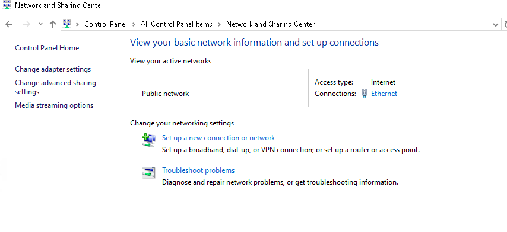

For this lab demonstration, I had to go into the NIC properties for the Windows host and add the Windows Server VM IP as the DNS IP to successfully connect and add the machine to the domain in this lab setup.
1. Open Network and Sharing Center under Control Panel.
2. Right-click on the Network Adapter you're configuring, then select Properties.

3. Right-click on Internet Protocol Version 4 (TCP/IPv4), then select Properties.

4. For this example, I have a the address's set up manually. In order for this machine to be added, it's need to be able to communicate with domain controller IP set up as it's DNS server.

5. After we have the domain controller IP setup as the DNS server for the host. We're ready to go into System Properties.
6. Then under the Computer Name tab, click on the Change button.

7. Click on the Domain check-box, and then add the domain name of the server.

8. The host will then prompt for an administrative domain username and password to authenticate. Enter in credentials and click Ok.

9. Upon successful authentication, you'll see a "Welcome to the Domain" message.

10. Then prompted to restart the computer to finalize the domain add.
 Back to Home
Back to Home